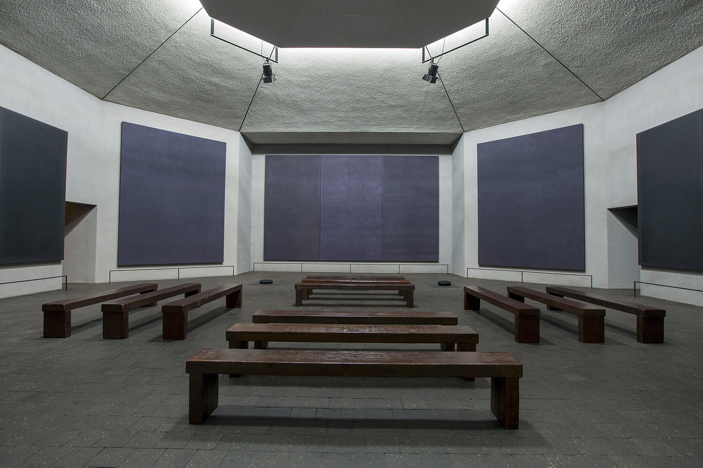
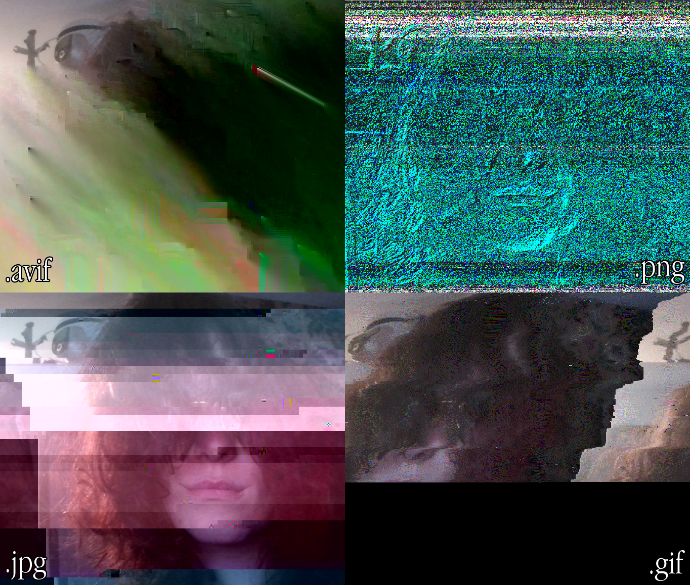
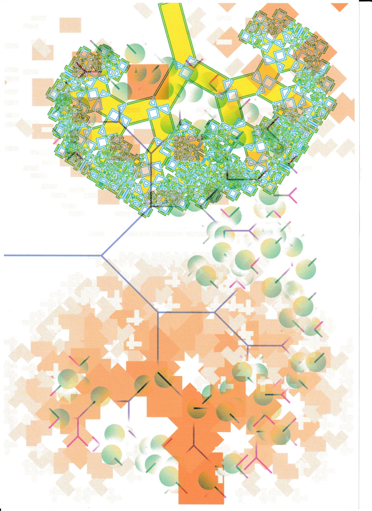
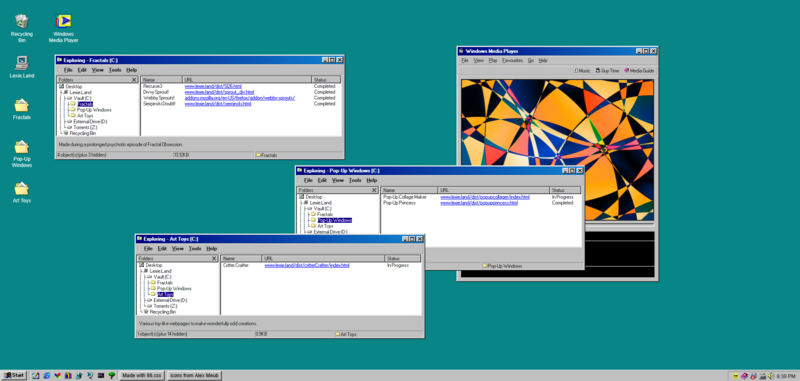

Creative software has heavily professionalised over the past decades. Many of their quirky and playfully pointless features have been heavily filed down (see: WordArt, Clippy), while more out-there programs failed to stand the test of time in capitalist for-profit contexts entirely (see: Flash, KidPix, Bryce). Even in game-making-for-kids software like Roblox, capitalistic motivations are made to seep into the creative processes of children; budding digital artists are spurred to create not for personal expression, but for notoriety and robux Robux is the in-game currency featured in Roblox. At the time of writing its conversion rate is 0.000898 USD/RBX. gain.
Meanwhile, in the indie Indie is a pretty contested term, but in this thesis it will be invoked to refer to independent, self-funded software projects. software sphere, there has been a surge of 'art toys'. These are explicitly playful, explorable digital tools, a key toy to this thesis being Electric Zine Maker by net-artist Nathalie Lawhead. It arguably kicked off my entire fascination with these pieces of idiosyncratic software. The primary purpose of these un-professional artistic programs is to draw focus to the creative process, and away from the final product. They are situated in sharp contrast to what we know as professional digital art tools by being accessible, unpredictable, and all-around weird.
Dear reader, together we will find out if there exists a discrepancy between digital artists and digital tools.
We will look in the direction of art pedagogy and art history to find out what it means to develop artistically, and what this looked like before digital.
We will look at the various ways digital and new media artists self-fabricate and reclaim the tools of their practice.
We will analyze art toys to see if and how they grant digital art beginners and veterans the means to learn, explore, and experiment.
Ultimately, we seek to answer a question: "How can art toys support artistic development?"
For what was probably the entirety of my childhood my dad had attempted to get me to care about programming. The bits and pieces I remember from this time consisted of me getting bored of Scratch and my dad quietly cursing trying to figure out Construct (or Flash, I am unsure). In hindsight I believe the major reason as to why these did not grab me at the time is because their pursuit was not borne out of my own interest, I was sat behind a computer to go do tedious assignments in Scratch where there was little room for my own creative input. Eventually I did want to make a sonic Sonic (the Hedgehog) - Video game character. fangame like Sonic RPG or Final Fantasy Sonic X, but this was too complex for me or my dad; it was, regrettably, quietly abandoned.
Instead I organically grew to love world-building and collaborative, interactive storytelling; specifically, DMing in Tabletop Role-Playing Games. This fascination was planted when a high school friend introduced me to Dungeons & Dragons and soon after I was hooked. I wrote pages upon pages of quests, characters, game mechanics, noble families, flora, fauna, and horribly unbalanced magical artifacts.
This led me to pursue game design, where I slowly but surely became cynical about the creative process. This transformation was in large part intended and guided by the curriculum; artefacts were evaluated on their marketability, adherence to narrow rubric requirements, or the overall taste of the department. Visual novels were notoriously derided for their lack of 'interactivity', and pursuing them would be met with doubt and heightened scrutiny. This approach to game- and artmaking soon led to me burning out, after which I had to relearn how to make games for the simple joy of making them.
This chapter is an investigation into the relationship between tools and creative practice, how tools can both serve and get in the way of artistic development, and the unique benefits and challenges held by digital tools.
First we will define the process of artistic development from a pedagogical perspective, after which we can move on to art tools and determine what makes an art tool developmentally valuable or harmful. Finally, we will arrive at digital tools and observe how they came to be and what effects they have had on artists and the larger culture.
Before we take a look at the qualities of a tool we will need to define the conditions under which artistic development takes place. In Creative and Mental Growth (Lowenfeld, 1965) it is argued that children, on the average, go through six discreet stages of artistic development. None are skipped or accelerated, and although there is some variability in how quickly children go through these stages they generally remain on par with one another. This growth is guided by contemporary schooling, which provides students with the necessary tools, time, and environment to practice their creative skills (p.396-402).
In regards to tools these stages differ greatly. At the youngest ages (2-4) safety and technical difficulties are a concern, so sharp pencils, watercolors, and cutting tools are discouraged in favour of safer and more permissive crayons, felt pens, and chalks (p.104). With the years more and more tools enter the repertoire of the child, allowing them time to grow accustomed with the new and find their own means of expression through their use.
Generally, throughout these stages it is also advised to avoid tools and materials that are gimmicky, and/or provide instantaneous results (drip-painting, pasting cereals, colouring sheets, pre-cut stencils), as these can do little for a developing child, or even counteract development (p.130). This point of recommendation proves timeless in our current age with the emergence of generative AI models, the impact of which on (children's) (creative) development and learning is has become the subject of informed guesswork (Nikolopoulou, 2025; Kanders et al., 2024), careful consideration (Shen, 2026), and heavy skepticism (Guest et al., 2025).
What does artistic development look like for adolescents and adults, however? Compared to younger children, in addition to practicing technical prowess this development is a lot more 'heady'. Art educator and researcher Joseph S. Amorino identified this in The Artistic Impetus Model (Amorino, 2009), where he describes how the concerns of an adolescent become a lot more difficult to identify and depict during their growth into adulthood. Here, artmaking can provide them with an understanding of their 'inner reality', making their selves comprehendible, accessible, and explorable given that they are provided with the necessary tools and structure.
To conclude, artistic development takes place under an intermingling of tool curation and provision, close guidance, and a freedom to create. A critical eye is cast on everything that enters this process, especially the tools. As such we will focus on tools in the next chapter to further define what makes a tool valuable in terms of artistic development.
Jumping off from this now-a-bit-more defined artistic development, what tool-characteristics are valuable in terms of artistic development? I already spoke of how gimmicky, instantaneous tools are deemed of little developmental value (Lowenfeld, 1965, p.129), so for our purposes it may be better to observe the traits of tools that are an effective means of artistic development. These may further enlighten us as to what our tools, or the tools of the future, should hold, or at least further contextualize any shortcomings.
In Steering the Craft, speculative fiction author Ursula K. Le Guin opens with her view on vocabulary and grammar as the tools of a writer, how they are only half-understood or wholly unfamiliar to many, and how fundamental they are to the practice of writing. How else can you review a sentence and see what is right or wrong? (Le Guin, 2024)
She invokes a more-intuitive example of a carpenter not knowing the difference from a hammer to a screwdriver, which can easily be transposed to the tools used in other crafts; from sculpting (loop tools, dental tools) to makeup (crease brush, powder brush). Tools like these have a history to them, taking form over decades/centuries/millenia to hone in on what makes them useful to their respective medium. Paintbrushes experienced a sort of renaissance thanks to the invention of the metal ferrule, for instance. Hairs used to be bound to the handle by hand and wire, which made the wood underneath extremely susceptible to moisture and rot. The metal ferrule provided structure and protection from the elements, granting the paint brush unprecedented longevity and a vast, novel array of possibilities in shape and size (Katlan, 1999).
So are tools developmentally valuable if they are old? Not so, rather what I want to illustrate is that an effective tool allows its user to grow beyond its constraints, both by becoming fluent in its use and reshaping it to fit their practice. The beauty of writing is that anyone literate can (and should) do it, but to be a 'good' writer Le Guin argues that taking the time to learn about grammar, verbs, sentence structure, et cetera, is imperative. In essence, it is about developing a level of control over your craft where you can place things like commas and periods with intention, rather than habit or guesswork.
Like so, the control of an artist over their tools can be linked to their development. For example, Mark Rothko's tools are imperative to his late period. His layering, brushstrokes, and careful pigment-formulations were imperative to achieve the sense of scale and depth necessary for his pursuit of mythology and optical intrigue (Breslin, 1993). This is especially palpable in the Rothko Chapel, where his monolithic rectangles are placed in an explicitly spiritual context, inviting visitors to sink into their depths. This work would not exist had he assumed a painter's given tools to be the limit for his practice.

What Rothko also embodies is something special about tool-fluency; an artist can achieve a level of understanding where they start to break their tools down, melting away their imposed and implied rules to reveal an endlessly modular core. However, "a blunder is not a revoltion". Going back to Le Guin with this quote, she writes on "fake rules", which are principles as inexplicable as they are common. An example of one such rule being the barring of "there is" as the start of a sentence, because of it being passive tense, and a misguided belief that good writers never write passive tense (Le Guin, 2024, p.13-15). Rules like these are easy to break, as their foundation consists of either nothing or educational quicksand, but breaking real rules asks for intentionality.
To summarize, developmentally valuable art tools have plenty of valid reasons for being as they are; they consist of rules, shapes, and materials that stood the test of time for reasons that can be learned and understood. However, even at the peak of tool understanding and 'fluency', there is another mountain. This one instead asks how the tool can serve the artist and their practice, irregardless of their rules and notions. At this point, the tool invites the artist to be an active participant in its very consistency.
Putting these observations into our back pocket it's time to clarify some more, now in the direction of guidance. What are the roles of mentors and structures in relation to artistic development and tool-learning?
In this exploration of tools' relation to artistic development, it's easy to forget the importance of guidance. The Artistic Impetus Model (AIM) by the previously mentioned Joseph S. Amorino, both as a paper and a model, is a great example of how mindful guidance can serve growing artists. The course's 16-week interference in the students' artistic development spurred both their understanding and interest in the arts. Amorino notes the importance of an educator's guidance, namely how art education struggles to identify the origin of artistic expression. What this leads to is linear, formulaic teaching with a focus on subject that are more intuitive to impart, like technique or art history (Amorino, 2009, p.125).
Like Amorino, various artists and theorists have described artmaking as a cyclical process, which provided further basis of the AIM; Klee (1920), Dewey (1934), and Read (1960) all point towards a cyclical structure of doing and undergoing. They share similar ideas in different terms (Klee's movement, Dewey's experience and expression, Read's creative process and created form) to describe this ebb and flow of artistic practice, a process all too familiar to those already tuned into their environment and ready to draw their inspiration from it.
The AIM also hinges on sensory stimulation as a jumping-off point, where students explore objects or memories with the use of their five senses. The author argues that this sensory stimulation, and the resulting emotional response, are necessary components to artistic expression (p.216-218).
I see this reflected in not only my own practice, but the works of uncountable artists and artistic movements. One such example being the impressionists of the 19th century, painting subjects rich in whirling movement and vivid colour, to capture the moment as they experience it (Bomford et al., 1991). Alternatively one can look at how pervasively an artist's own life is used as a source of inspiration. Whether it be their
childhood memories,
In an interview with David Sheff for his book Game Over: Press Start to Continue: The Maturing of Mario (1999), Shigeru Miyamoto recounts how his childhood experiences inspired the conception of The Legend of Zelda:
"When I was a child, I went hiking and found a lake,” he says. “It was quite a surprise for me to stumble upon it. When I traveled around the country without a map, trying to find my way, stumbling on amazing things as I went, I realized how it felt to go on an adventure like this."
past loves,
The George Miles cycle is a series of five novels authored by cult writer Dennis Cooper.
Its namesake comes from the author's childhood friend and lover, and the cycle itself was conceived to express, explore, and comprehend his obsessions around sex, violence, and Miles.
From: American Psycho: An Interview with Dennis Cooper (3:AM Magazine, 2001)
or communities;
Actor and Director Spike Lee's critically acclaimed film Do The Right Thing was borne from a racist attack and the time's strained racial relations as a whole, as he saw it growing up in Brooklyn, New York.
From: Interview: Spike Lee (Glicksman, 1989)
life experiences, and reflection upon them, shape what artists make and how they make it.
Reflection is perhaps the most important, and where the budding artist most benefits from guidance. Any artistic process necessarily feels exposing, shameful, or simply too big to handle; how many students are forced, by a failing grade's loaded gun, to draw a self portrait? No less in a period of their lives where the self is such a volatile and nascent thing?
I remember having to draw myself in middle-, high-, and art school. For each and every one I felt too insecure in both my abilities and personhood to sufficiently reflect on myself, or to even know what to capture.
So here is where I believe guidance proves most meaningful; a relatively simple cycle of egging on, setting sensible goals, inviting to self-reflection, and being kind and empathetic to the challenges of childhood, adolescence, and adulthood. If we want people to make art they need to be given the safety and confidence to make their art speak, and we need to be willing to listen to what it says.
Now seeing the importance of both tools and guidance in relation to artistic development, it's time to broach the topic of this thesis named digital tools; artistic tools made in the context of computing. We will first look at their history and development, after which we will observe how they scale up to being developmentally valuable. Are they thoughtfully made? Can they be made to evolve alongside one's evolving practice? Do they provide guidance, or make room for guidance to take place?
At the time of writing Creative and Mental Growth, computers and their programs were not yet a factor in art education, but we can see clear bridges between the analog tools of then and the digital tools of today. Irregardless, whether digital tools have a place in art education has been the subject of extensive research and debate (Aboalgasm et al., 2017).
To quote an article on King's Field in issue 61 of Electronic Gaming Monthly Magazine, written by Chris Johnston, "The PlayStation can produce mind-boggling effects" (1994, p.56). However, are the tools involved in the production of these these mind-boggling effects capable of triggering artistic development?
In Mindstorms, computer scientist and educator Seymour Papert argues for an educational relationship between children and computers where, instead of the computer programming the child, the child adopts a more active and self-directed approach with the computer. In this manner learning how it works by learning to 'speak computer', so they might grow capable of writing their own programs and get full use out of these devices (Papert, 1980, p.19-21). At the core of his thesis lies his co-authored educational programming language Logo, namely its turtle graphics feature. With this tool learners can, by way of puzzles and immediate feedback, grow accustomed to the fundamentals of computational thinking (code flow, functions, variables).
It's notable how turtle graphics casts programming in a visual, arguably artistic light, and how comparable learning it is to traditional art education. Much like how painting and drawing trains our fine motor functions (Lowenfeld, 1965, p.65-66), the process of writing, testing, and rewriting code trains us in handling a computer. We develop ourselves both in a bodily sense as a cognitive sense; We don't just learn how to use a mouse and keyboard (preferably) with our hands and fingers, we learn how to 'speak computer'.
Digital tools go far beyond the capabilities of turtle graphics, however. Much like any artistic practice, the tools of digital artists are varied. Still though, analog materials do enter these practices, for example in the beginning stages of a project. Considering my own background in game design and development, pen & paper prototypes are and have been considered a fundamental prototyping method (Adams, 2013; Schell, 2008; Saffer, 2009); from UI layouts and UX to game mechanics or spatial layouts, they let designers fantasize before putting anything to code.
In part this is done because of a need or desire for quickness. Anything digital tends to get bogged down by booting, setup, building, rendering, et cetera. With pen & paper you can immediately start sketching, folding, and cutting. These prototypes also aren't so precious as even a roughly blocked out level, they can easily be modified or tossed entirely without much emotional baggage. Famously, during the development of Metal Gear Solid the developers used LEGO bricks to build levels and test their sight-lines.
This doesn't mean that there are no easy, iterative, digital tools of course. Unity's whiteboxing tool ProBuilder and capacity for runtime editing are great examples of digital prototyping, but still suffer from the need to boot it all up, being constrained to a screen, and not saving the scene on exiting runtime; it's always easier to turn over a tub of LEGOs.
This complementary relationship between analog and digital highlights their differences and where they can compliment one another. In digital nothing is permanent, and in analog everything is quick and easy. This is why it feels quite natural to let analog feed into digital, where it can be refined to perfection. Whether it be photographed portraits scrubbed to an unblemished polish, or a drawing's crooked perspective being pulled and shoved to be -just- right, digital tools grant an unprecedented level of control.
So what are these digital tools? DAWs, IDEs, game engines, raster and vector graphic editors; each category of software contains a multitude of programs that are free, SaaP, SaaS, FOSS, OSS, closed source or some secret, other license.
Point is, the world of creative software is vast, complex, and full of toolmakers with vastly different reasons for being toolmakers. Some software exists for the simple love of making it and having it be used, others have won themselves such a staggering level of widespread adoption that they've grown into massive shareholder-serving corporations.
Where analogue art tools don't suffer as much from this corporatized interest in their tools and materials, digital tools do so massively. The advent of DRM has opened the doors to various temporal, predatory payment models (monthly, yearly... weekly?), designed with enterprises and shareholders in mind rather than the artists who use them. Ultimately, what that means is that ownership of these DRM-protected tools doesn't exist; an artist has to rent them. It will never be an artist's to have, keep, share, or modify. Additionally, it means that these tools are designed with enterprises and shareholders in mind, rather than artists.
Then what do enterprises and shareholders want from creative tools? Preferably, an employee produces as much work in as little time as possible, and an efficiency-first tool like Adobe's Photoshop serves that aim well. Why screenprint when you can get an aesthetically comparable result from a filter stack? Why construct a VHS-to-MP4 footage pipeline when an After Effects preset looks similar enough? Why make anything when you can generate it with text-to-image LLMs?
The logical conclusion of this line of thinking is the complete replacement of artists, and as such that's what these tools aim to achieve. They want to take over a large amount of the artistic process and place it far outside of the artist's control, in a dogged pursuit of quickness.
As you might have noticed, this does not match the conditions under which artistic development takes place, or the tool-characteristics we identified as developmentally beneficial, or the uninvasive, supportive mode of guidance espoused by art educators and theorists.
So what do artists do to take back control over their digital artistic practice?
They mod the tools which, as they've grown comfortable in them, turn out to be cramped.
Adobe's Exchange, Godot's Library, Blender's Extensions; DAWs arguably are built to house plugins. Whether they allow modification of the software itself is more variable. FOSS allows it implicitly, whereas something like FL Studio prefers its software-bones untouched, rather functioning as a house for plugins to take residence inside of.
Even browsers, our primary way of interfacing with the internet, offer plugins in the form of extensions and bookmarklets.
They pirate the software they have been using or want to use.
In some instances it's not so much analogous to someone shoplifting a painting set, but rather someone not returning the painting set they've been renting for years for, at the time of writing, US$69.99 a month. Cracking the DRM on these tools has been a hobby for as long as DRM has been a thing, and much like graffiti both the showcase of technical prowess and illegality are key ingredients to its appeal.
They make their own software.
This software often reflects their values, both as a software designer and beliefs-having person. GNU, stated to be a "technical means to a social end", reflects the views of its creators deeply (Stallman, 1986). It's free, open to look inside of and modify, and spawned a long lineage of other free software based on its code as well as its philosophy.
So in this chapter we've established in what ways art tools are valuable to artistic development, for example by being fitting of one's skill level, non-instantaneous, and capable of growth along with its artist. From here the role of guidance/mentorship was exemplified as another key element of artistic development. Moving onto digital tools we see how early efforts were made to introduce code and digital as a means for expression, but it never quite managed to shake its role as a means to produce finalized products. From here DRM took away what little control or ownership there was over one's digital tools, and what's left is hyper-productive creative software, made to support the content onslaught desired by an algorithmic mentor.
In the following chapter we will continue to examine how digital artists work to reclaim the means of their practice. Specifically, we will observe the tool-traditions of various artistic practices, where digital tool creation, modification, and appropriation are commonly engaged in.
To complement these observations I'll note how they informed my graduation project VisunovOS; a playful, storycrafting web-OS that invites users to edit and add to its tool-repertoire.
I have a complicated relationship with professionalism, it has always been exceedingly difficult to adopt in my creative processes. This, by extension, has also made the relationship between me and my professional-grade tools tenuous. My growing desire for tool-ownership was not compatible with my toolbelt at the time; most if not all of them were subscription-based, pirated, or closed source, so I have felt a growing need to exchange them.
This was around the time when I attended a screamo gig in my hometown. The venue was situated in a quiet, half-gentrified industrial zone inside of a skatepark. I was mostly looking through a small window, watching cute skateboarders whizz past as the flat-capped singer gurgled and spit incomprehensible lyrics over the guitarist's gloom-filled chords. At the time it struck me how freeing it must be to do away with conventions of your medium; to become artistically unintelligible.
This chapter dives into the means of artmaking. To set the stage we will look how artist's control over their practice and output evolved over time, after which we will explore three digital artistic practices that I believe to be of interest in terms of their artmaking means.
Each discussion will be concluded with a reflection on my own practice and how the research influenced it, specifically in relation to my graduation project VisunovOS.
First of these will be glitch art, which questions the pursuit of control and perfection of our digital age by breaking it open and exposing its blocky innards.
Next will be Noise, a loosely defined genre(?) of deeply experimental music, rejecting any and all musical authority in favour of the music contained in objects, signals, and the very cables themselves.
Finally we will arrive at net art and its offshoots, which appropriate and recontextualize the web's standardized languages to expose unintended, novel, and artistic use-cases.
Historically and across artistic mediums, the means of artmaking have entered, exited, reentered, and reexited the direct possession of artists. Patronage, meaning the financial backing of the arts and artists by the wealthy, has played a major role in artists' ability to make art (Kent et al., 1987; Brown, 1993). This now includes both the direct commissioning of artwork as mass-audiences and mass-consumption, through the more public-oriented systems of museums, cinemas, venues, and (online) publishing.
Before this massive accessibility of the arts, non-commissioned art was a rarity (Starr, 2017). Reasons for engaging in this sponsorship varied greatly; some works might be made to endorse political ambitions, to (re)write history, or for simple prestige. Making art for an audience outside of the wealthy royal, imperial, or aristocratic classes only reentered commonality together with industrialization, and the rising power and influence of a bourgeois class (Bürger, 1974, p.47-54).
What this meant for the pre-industrial arts and artists was a necessity to paint, sculpt, and compose to the tastes of their patrons. In addition to this subject-related subservience, a patron could also direct materials, dimensions, or composition (Nelson et al., 2008, p.20). Even if their artistic voice was limited, they did have their tools. These were largely made by themselves and their apprentices; pigments were ground and paints were formulated in the atelier, chalks were made from different stones and clays, and brushes were both bought and made by the artist (Harley, 1972, p. 123–126).
If anything, the idea of "art for art's sake" is a relatively recent one, borne from this post-industrial artists' decreased reliance on patronage. Cultural theorist Peter Bürger defined this predominant category as 'bourgeois art'; artistic developments not motivated by the sacral or the courtly, but by social and economical changes (Bürger, 1984, p. 47). Art started to reflect the artist, rather than the patron, and self-expression became definitional to artistry. The control over one's artmaking means was regained.
However, this means-ownership again began to fall apart with the introduction of digital tools. At first it wasn't so different from buying artmaking supplies, you'd buy something like Macromedia's Flash 5 on a disk, after which you owned it and could use it as long as your operating system supported it. With further technological developments however, DRM measures started popping up an early example being one-time activation codes to ensure that people couldn't share or resell their copy of the software. Nowadays this means that older DRM-protected programs are near-impossible to legally acquire; the majority of these codes have since been used up.
Now that major digital art tools have moved on to cloud-based subscription models, where you essentially rent the program, art tool ownership has become a lot less self-evident than it is with analog arts. However, how unreasonable is making your own digital tools really, now that software development knowledge has become much more widespread?
Very unreasonable as it turns out. For example, making your own game engine. In game development circles it has become a bit of a joke, in part due to the complexity of such a task. Building a game 'from scratch', meaning without the use of preexisting game engines like Unity, Unreal, or Godot, requires the involvement of widely adopted and open libraries (like SDL or OpenGL). These cover some fundamentals like real-time rendering or input, but all this time spent on making the tool takes away from making the art. In the end it comes down to whether the huge time investment is considered to be worth it, and especially in a capitalist, productivity-oriented context it rarely is.
To elucidate this point further we can look at a theoretical small game studio called Shoesoft. For the sake of argument, Shoesoft sees its games as art, but it also needs money to keep making this art full-time. There are a few avenues for funding, for example from publishers, subsidisers, or crowdfunding. This is what can get development started, but these parties expect a game around a deadline. In this case spending time on developing an in-house game engine can be seen as a waste of resources (time, money), because at first glance it does not directly contribute to the final game taking shape. In addition (new) staff needs to be made familiar with the software, the development of it can go wrong; there's major risks involved. The easier, more sustainable choice then becomes a commercial game engine, which's capacity for game-developing has long been attested (see: games on Steam using Unity).
Even in contemporary art education, digital tool development is considered far outside of the course's scope. Instead, a focus is placed on teaching industry standard software so the student can seamlessly fit into various workplaces' pipelines. This seems to run contrary to the majority of art education, where a student is encouraged to closely regard and question themselves and their environment. Why should their tools be exempt from scrutiny?
In the following sections we will be investigating the artists and artistic movements that do question their digital and electronic tools, the foundations of their medium, and the role of art in an age of digital and mechanical reproduction.
"To glitch is to embrace malfunction, and to embrace malfunction is in and of itself an expression that starts with "no."
-- Legacy Russell (Russell, 2020, p.17)
When thinking of glitch art the first image that springs to my mind is a picture which has been shifted in fractalized blocks, and in parts has turned fluorescent and visually 'noisy'. This first instinct highlights the aesthetic aspect of glitch, how its unique visual qualities have bored into the collective consciousness. Glitching is how digital objects break, unintended visual effects sometimes taking place as it does.
In a way glitch has become the marker of digital authenticity and fourth wall-breaking. Much like how The Blair Witch Project's found footage-style segments were filmed using a Hi8 camcorder of wanting visual clarity (Metz, 2006), Doki Doki Literature Club and OneShot use the aesthetics of bugs and glitches to foster the impression of unstable, autonomous, or 'cursed' software. It can ground the work as a product of code, like film grain or recording crackle, either with or without intention. It's no surprise how pervasive glitch as a theme is in digital-first media like creepypasta, where works like Sonic.exe, BEN Drowned, and Tails Doll Curse use glitching to trigger a relatable sense of dread around misbehaving software.
The aestheticization of glitch is not unique however, many artistic techniques have been claimed and absorbed into this Photoshop tutorial-fication where the original methods are foregone in favour of a non-destructive, reproducible 'pipeline' with similar-enough results. Other examples of this consist of techniques like blackout poetry, double exposure, audio feedback, or found art. What these techniques and glitch have in common is that they are fundamentally destructive and random; they're delicate artistic practices without an undo button.
In the context of capital, randomness and destructivity are bad qualities to have, for similar reasons to the previously mentioned game engine. It's hard to argue for such a fleeting and volatile technique when the 'look' of it can easily be reproduced. Some artists did find the words to argue that a delicate process can be the whole point though. The Fluxus movement revolved around chance-based processes, the 'final product' would be different with every performance (Wainwright, 2016). The works of experimental composer Alvin Lucier, who used his own brainwaves, and organoids derived from his cells to perform music, are similarly non-deterministic (Lucier, 1982; Ben-Ary, 2025). Even if one were to record and sell a copy of his Music for Solo Performer, it loses part of its artistic value by introducing the vinyl's inherent determinism.
On the end of critical theory, glitch is invoked to oppose the pursuit of digital noiselessness and frictionlessness.
Art curator and theorist Rosa Menkman's Glitch Studies Manifesto jumps out as a text that finds the words for this relationship, describing "the search for a noiseless channel" as "regrettable, ill-fated dogma" on its first page (2010). Much of modern technology aims to apply a layer of frictionless humanistic language over what fundamentally is computational (LLM chatbots, natural language programming, website builders), nurturing a growing distance between us and the device's binary bones.
As is described by media studies author Lori Emerson in Reading Writing Interfaces, technology has become indistinguishable from magic for many, and something like glitch can serve as a sort of antidote to that perception (2014, p.2).
Finally, Glitch Feminism, a manifesto by curator-writer Legacy Russell, speaks on glitch as a multifaceted tool-identity that grates away at noiseless internet-userdom and web-comformism. It explores the ways in which glitch not only counteracts, but builds for a better online (2020).
A broad range of glitch methodologies exist, most of these requiring you to first peel back the human-parsable layers to directly interface with a file's bytes. Alternatively, as described in A Vernacular of File Formats, compression, conversion, encoding, decoding, and import settings can also used to distort data, albeit in a slightly more controlled, predictable manner (Menkman, 2010). Numerous tools are out there to assist in these glitching efforts, but as a fledgling glitcher you don't necessarily need more than a text or hex editor. Making your own glitching tools also isn't that much of a step up; any high-level, Turing-complete programming language will offer any functions one would need to scale up their byte-crunching practice. For example, one could specify the area and number of bytes they want to change, in what range, or specifically what to.
Tools developed for the express purpose of glitching include Rosa Menkman and Johan Larsby's Monglot (win32 port by KernelEquinox), Lyra Rebane's Arrupted, and Patrick Gillespie's Image Glitcher.
All of these tools are perfectly fine and useful, but a part of glitch's charm is that practically any software capable of importing and exporting files can be used for this unintended purpose. This can make tools like convert.to.it, which can even convert image files to audio files and back, and Audacity, a audio editor that can import and export certain image file types, valuable additions to anyone's glitchbelt.
Echoes of glitch live on in my own work, as I was specifically enamoured by its non-deterministic qualities. My first explorations consisted of simple Python scripts that flip or cycle the bytes that make up a given file. These are very rudimentary, they often fully break a file because the editing doesn't exclude the file's header for example, but they've taught me how file types break differently.

Showcase of an image glitched in 4 different file types.To summarize, glitch is a rich, varied subject full of artistic and academic value, but the public conception of glitch is a frustrating one. This deeply digital practice which should run counter to capital's pursuit of noiselessness, still gets subsumed by it in the form of aestheticized social media filters and advertising graphics. It's a problem of anything both transgressive and visually distinct; a deprioritization of its transgressive qualities in favour of a pleasing graphic.
"Capital has the ability to subsume all critiques into itself. Even those who would *critique* capital end up *reinforcing* it instead..."
-- Joyce Messier (Disco Elysium, 2019)
"It's like looking through a tiny pinhole at this infinitely big world, and then you move the pinhole a fraction of an inch and it's a totally different one!"
-- Jessica Rylan (Rodgers, 2008, p.148)
The foundations of Noise were established by the advent of hearing. For many of us noise is a universal experience, and it follows us anywhere we might go. Noise takes this noise and places it in a musical context, an early instance of this being Tchaikovsky's usage of cannons in 1812 Overture. Later on, futurist artist Luigi Russolo writes on noise as music in The Art of Noises, valorizing these 'noise-sounds' as something to pursue rather than the sounds of traditional music composition and instrumentation (Russolo, 1913). To this end he developed Intonarumori; noise-making tools that are argued to be the first mechanical sound synthesizers, albeit enharmonic and acoustic (Chessa, 2012). Tragically, like most of his futurist contemporaries, he let these transgressive ideas about art lead him right into becoming an ardent supporter of fascism (Chessa, 2012, p.8). Fortunately for us, this didn't set the standing-tone in Noise.
Ideologically, contemporary Noise is defined by musical anti-authoritarianism. It rejects musical conventions, theory, and traditions in favour of uninhibited experimentation. Where some forego intentionality for a sono-masochistic pursuit of loudness, others move with careful intention through their noisy practices (Power, 2009, p.99-102). Mannerism is seen as the enemy of experimentation, so you see Noise projects evolve, die, and reform at a rapid rate (Mattin, 2005).
Arguably by design, Noise isn't popular or commercially successful. On Spotify even the most popular siren-wailing tracks of Noise-titans like Merzbow and Throbbing Gristle are numerically blown out of the water by the noiseless, but in part this can be ascribed to Noise's performativity. Listening to noise on a record or CD is antithetical to the genre's chaos (Toth, 2009, p.27-28). Repeatedly listening to the same track introduces a sort of listener-mannerism and makes it anticipable, so it's no wonder that Noise artists and listeners instead gravitate towards live performance.
I would argue that this gave rise to the 'Harsh Noise Wall' subgenre as a Noise conceived by recording and distribution technologies. These droning, multi-layered, monolithic tracks are typically extremely long (>1 hour), slow-moving, and sonically dense. Even on repeated listens it avoids anticipability, instead opening itself up the more it's listened to in a variety of listening-contexts (headphones, bookshelf speakers, a phone).
So this non-repeatability is a feature of a large portion of Noise, which's emergence can be seen clearly in the experiential live performances of particularly improvisational artists like Rudolf Eb.er. What it comes down to is that the mangling of a signal is a delicate ordeal. Knobs are turned, wires are moved around, and instruments are frankenstein'd to produce a sound unlike any other, after which the exact sound itself becomes essentially unreproduceable.
Musician and engineer Jessica Rylan describes this process as a break from the top-down techniques of classical '60s synthesis, where input and output are clearly defined, parameters are labelled, and everything is both documentable and reproducible (Rodgers, 2008, p.147-148). Now, especially with practices like circuit bending, pre-existing sonic circuits are broken down and patched in unusual ways with unusual results. The set of parameters essentially grows to an occult scale where a sound's distinct 'gkgkkhhh' may come from imperfect soldering, a stronger resistor, a semi-broken chip, or atmospheric humidity. It's a primitive, trial-and-error form of music-making which's ephemeral qualities, like glitch, implicitly oppose commerciality, standardization, and mass production.
Taking circuit bending as a jumping off point we can start looking at the means of Noise. Perhaps one of the most compelling features of the genre is that just about anything can be used in its creation. When circuit bending, a Noise-maker takes preexisting circuits, such as the ones from kids toys that feature an audio component, and changes their outputs by adding a variety of electronic components (circuitbenders, 2001-2026). Resistors, potentiometers, and wires can help distort a sound circuit's output in novel ways. With the addition of an output jack, further patching through the likes of pedals and synthesizers is also possible, but these can be expensive and difficult to access.
The Noise scene tends towards DIY, likely in part due to this aforementioned priciness of even second-hand hardware (Woods, 2022). Instead, components can be salvaged from (broken) electronics, which are hyper-accessible since (broken) electronics practically surround us (Schuurmans, 2025). These can be used in circuitbending or to construct entire new sound circuits, like simple oscillators, pedals, or weird little noise-makers.
Another early inception of Noise, in addition to Russolo, can be found in musique concrète, a mid-20th century music genre which composes with sound recordings, rather than musical instruments. In modern-day music production the usage of samples and 'found sound' has become common practice, but at the time this technique was cutting-edge, made possible only by recent advancements in audio recording technology (Holmes, 2008, p.73).
Noise also widely adopts the usage of found sound, like the ones found in power tools and industrial equipment. The japanoise group Hanatarashi even included an excavator in one of their live performances. Moreover, thanks to tools like contact microphones and field recorders, projects like Clipping. and Runzelstirn & Gurgelstock are able to pull haunting, amped sound from everyday objects and locations (Epstein-Gross, 2024; Ortmann, 2009).
Noise artists find ways to appropriate traditional music equipment as well. Instruments and vocals are involved in the un-traditional play of The Skaters, Senyawa, and Jessica Rylan, mixing into the noise or acting as a signal input to be digitally mangled and reformed.
On the software side there are VSTs: virtual instruments and effects that generate and alter sound signals. These tend to be much more accessible and easier to publish, simply by their digital nature. As such, they get to be a lot more experimental compared to off-the-shelf synths and pedals. Cult classics like Delay Lama and MeowSynth showcase a more eclectic side of VST design and the unique possibilities they present.
To conclude on Noise, it is notable to me that the genre is about as all-consuming as the pop-cultural commerciality it has tried and largely managed to evade. Any noise can be Noise, and anything can be used to make Noise; making Noise is a question of choice rather than ability. It is unreasonable to choose to make Noise for any profit- or popularity-driven reasons, the only reasonable motivations one would choose to make Noise is to experiment or express. Like a frustrated pianist slamming down on her keys, or a guitarist snapping their guitar over an amp, Noise is made for noise's sake.
In VisunovOS Noise is ever-present, in an effort to sharply contrast the complete noiselessness of most contemporary software. Everything has to have a sound, audio loops and layers on top of one another, using it should be cacophonous and slightly overwhelming. Startup sounds are especially important to me, as these seem to help set the tone for a playful interaction.
At the time of writing the combo meter in DivBrush has sounds, the delete-gun in Flippascript has sounds, desktop toys like GuyMode and Spinny have sounds, and I hope to soon add a toyware for making and editing sounds.
VisunovOS chooses to make Noise for noise's sake.
Contrasting Noise's anti-authoritarian chaos, there is the hyper-standardized internet, and those who use and abuse said standardization in their artistic practices.
"The internet is for the cats!"
-- Nekoweb's slogan
Net art as a term encompasses work made in internet and computer software contexts. Here the interactive interfaces offered by phones, computers, browsers, and applications are exploited for the artist's purposes. So, rather than using the internet as a platform to disseminate art, like publishing music files or a webcomic, net art turns the functions of the net into an active component of the art piece (Ippolito, 2002). Form Art and Form Art Competition by Alexei Shulgin made this (admittedly vague) idea click for me. He recontextualizes bare, ever-present HTML elements like check- and input boxes by using them to, rather than ask for a password or unsubscribe from a newsletter, create a vast, scrolling canvas of kinetic shapes and compositions (Rhizome, 2017).
Although what is academically defined as 'net art' spans the late 90s-early 2000s, it's not like artists stopped using the web as an artistic medium. Feminist media artist Angela Washko comes forward as a contemporary example of net-artistry. She breaks the expectations set by MMO spaces in her Gaming Interventions by interviewing players on their thoughts about feminism, revealing and contextualizing the pervasive bigotries of these spaces in the process. She also submerges herself in other, digitally-born cultures, namely the manosphere and pick-up artistry in BANGED, The Game: The Game, and TG:TG:TG. Lastly, her and Alex Young's project Serf Net gives a voice to the labourers of crowd-sourced labour platforms within the context of their labour, by hiring them to write about themselves. In addition to utilizing the features offered by computers and browsers, her work takes an ethnographic approach to the people that inhabit these internet spaces (Valentine, 2015).
Net art-practice can be seen as a sort of reclamation of the online space which I and you, the reader, probably spend an inordinate amount of time inside of. Exemplary of this is the loosely defined, current-day web revival movement. Born from a stew of nostalgia and frustrations with the walled gardens of today's internet, it encourages netizens to set out and carve out a little corner of the internet of their own (Melonking, 2023). Free static web hosting services like Neocities and Nekoweb have made this easier than ever with their in-browser code editors, and community efforts surrounding net-reclamation practices has grown to offer numerous templates, guides, and tutorials through knowledge hubs like 32bit.cafe. From here you can see artists spring forth and create works that again reframe superficially boring or universally detested browser features, like how Lyra Rebane's Antonymph reimagines pop-up windows, a feature hated even by its inventors (zuckerman, 2014).
Self-ascribed webmaster Daniel "Melonking" Murray states in his manifesto that "digital space has no scarcity" (Murray, 2022), and in a way that's true! Webpages don't literally consist of scarce materials, but the physicality of the internet's infrastructure can't be understated. Servers need to be built, maintained, and scaled to serve web-hosted material, and internet provision relies on vast networks of cables and base stations. The existence of the internet is very reliant on scarce hardware, and what's both beautiful and terrifying about this is that you can't reasonably do all of it yourself; your practice will eventually have to depend on someone else's work or service.
I felt this friction personally when working on a personal website. I had the goal to move my portfolio away from a website builder and discovered that this meant I'd have to instead deal with the likes of a domain registrars and VPS providers, while also being confronted by the limits of my own webdev ability. Engaging in active netizenry is a knowledge-heavy process, which is all the more reason to seek out further interconnection. This sense of togetherness is reflected by the tools of net-scaping: the combination of markdown, style sheet, and programming languages shape a website, needing one another as much as I needed someone to explain VPS security best-practices to me.
What these tools can tell us is that standardization is not antithetical to experimentation. In the end it depends what you do with the tools at your disposal, and in the context of the web these are complicated to an extent where standardization is necessary to the internet's continued existence. Much like the Chiral Network depicted in the game Death Stranding, the internet depends on everyone's connection to it to be of any value as a conduit for communication. The answer to growing corporate influence isn't to cut ourselves off from the tools they appropriate, but to forego social media cubicles in favour of an ever-shifting, collectively constructed network of digital spaces.
I chose for VisunovOS to be web-based because of my own fascination with web-recontextualization. One of my first projects was Recurse^3, a fractal tree generator that constructs these trees using div elements and CSS rules. Since then many, if not all of the 'toywares' contained in VisunovOS try to reimagine or shine a light on alternative uses of HTML/CSS/JavaScript.

Fractal Collage #9, made with Recurse^3 and a printer.For example DivBrush, a drawing program that uses CSS-styled divs as its 'paint'. To recontextualize pop-up windows I also developed Pop-Up Collager, to create collages from web pages and injected HTML.
To lead us into the next chapter we will first inventorize our conclusions on glitch, Noise, and net. From there, we will leap into the subject of art toys.
Glitch is a practice that involves the breaking of digital media in novel, non-deterministic ways. Error and noise are pursued instead of minimized, and a deeper understanding of data is fostered. Glitch artists trigger these uniquely digital imperfections through a variety of tools, self-made as well as repurposed.
However, glitch has entered popular media as a visually novel, aestheticized form of itself; blurring the imago of glitch as a fundamentally transgressive practice, or perhaps highlighting what aspects of it -are- transgressive.
Glitch shows us how digital artistic practice can exist beyond the stated purposes of software, whether they be file types or graphics editors; validating destruction as valid artistic practice.
"So, go ahead—tear it all open. Let's be beatific in our leaky and limitless contagion. Usurp the body. Become your avatar. Be the glitch. Let the whole goddamn thing short-circuit."
-- Legacy Russell (Russell, 2020)
Noise questions the foundations of music with its onslaught of timbre. What started with 1812 Overture's carefully placed cannon fire, has grown to the likes of speaker-blowing Harsh Noise Wall.
The one constant in Noise is the dogged pursuit of new noise, without consideration for melody, rhythm, or musical theory in general. This total divorce from general appeal frees the artists in a way where they can experiment with reckless abandon, involving anything and everything in their performances.
Noise shows us how freeing and stimulating it is when everything is a potential tool in one's practice, and highlights the beauty that can be found in the cheap, the makeshift, and the ramshackle.
"Since the 90's, I mainly used homemade musical instruments that can be played by attaching contact microphones to spring-loaded metal junk."
-- Masami Akita / Merzbow (Fifteen Questions)
Net art recontextualizes that which is boring, standard, and irritating about the web, instead making it beautifully compelling.
It encourages a more self-directed, assertive manner of interaction with the internet, divorced from the corporate, ad-centric interests that typically plague online life.
Here the internet becomes a toolbox rather than a content delivery system, wherein its various hyper-standardized tools, such as HTML, CSS, JavaScript, are experimented with and misused.
Net art shows us the value of tool-standardization, namely how it enables knowledge-sharing and network-forming, so more can climb over the garden wall and take an active part in net-making.
"Sharing is good, and with digital technology, sharing is easy."
-- Richard Stallman (Stallman, 2012)
Lets start with a definition for 'art toy'. In this thesis art toys will be considered digital artmaking tools that feature playful and exploratory modes of interaction, that prioritize the process of making rather than the creation of a final product. Commonly, an art toy will contain features that are unpredictable, unusual, destructive, ugly, unnecessary, useless, or just plain weird; anything which in corporate terms would be 'unproductive'.

An art toy's playfulness comes from this collection of features, which's oddities and novel effects invite experimentation. By being so unlike what we expect artmaking software to be, it helps artists leave their preconceived notions at the door and engage in free play.
An art toy's exploratory quality comes from this free play, where engaging with a feature becomes an exciting process of discovery. Without expectations, or with expectations that are wrong, the way is paved for surprise and intrigue to take place. Questions get to arise around a function, how it works, and how it might interact with other functions or art toys.
Comparing these art toys to the aforementioned digital artistic practices (glitch, Noise, net), we can establish some similarities.
Like glitch art, some art toys are destructive and non-deterministic. Numerous art toys also feature or entirely revolve around glitching, like BMP Encryptor, BECOME A GREAT ARTIST IN 10 SECONDS, and Electric Zine Maker's 'scream into the void' tool.
Like Noise, some art toys pursue new methods of digital artmaking by breaking from the conventions of productivity-oriented art tools. This leads to novel, deeply digital methods of artmaking, like composing music with vertices in F15H 74NK, or painting with moving, colour-changing paints in Lipsu.
Like net art, some art toys take well-known features of software, like browsers, to instead turn them into artmaking tools. For example, writing poems by highlighting text in Catch a Poem, and ASCII drawing tools like Playscii and REXPaint.
Art toys are highly absorbent; they spring forth from a variety of artistic practices where tool-making is common, because fundamentally they aim to be an accessible and playful introduction to said artistic practices.
In this chapter I will analyze two categories of art toys, taking the previously defined developmentally valuable tool-characteristics as a reference point to see if and how these art toys are developmentally valuable. In addition we will look at art toy typicalities; is there a through-line in art toy design and features?
First will be what I'd like to call proto-art toys. These are idiosyncratic artmaking programs from the 90s-00s, which were primarily aimed towards children and the tech-illiterate. I believe these will reveal a handful of core principles of art toy design, that implicitly or explicitly serve artistic development.
Secondly I'd like to focus on the 'critical' art toys that are borne, in part, from dissatisfaction with the current direction of creative software. I'll illustrate this progression with Electric Zine Maker, an art toy which arguably kicked off this thesis and my own interest in tool-makership. I believe this section will present a more intentional and self-aware approach to art toy-making, as a direct evolution out of proto-art toys.
To round it off I will be reflecting on the development of my own art toys and how this process was informed by variety, such as glitch, Noise, net art, art toys, the things I've learned from writing this thesis, and my personal desires.
It might help to start with an example, and the first and foremost example of art toy-ism is Kid Pix. Its original creator, photographer and software designer Craig Hickman, wanted to make a computer drawing program for his then 3-year-old son Ben. In this pursuit he formulated fifteen guiding principles to make sure the software would be both easy to use as well as interesting and fun (Hickman, 2013).
In these principles we can see some now-familiar ideas present themselves; ensuring a surprising and satisfying making-process (#2), open-endedness and modifiability (#4), focusing on the unique possibilities of digital tool-construction rather than imitating traditional tools (#7), and the prime directive: extreme ease of use (#1).
This last one hasn't come up much so far, but shouldn't be understated. Programming and digital tools are incredibly open-ended, to an extent where it can even be detrimental. Where do you start when everything is so new and big and disorienting? This was the problem Ben faced when using MacPaint, and what Hickman set out to address with Kid Pix (Scudder, 2020).
What we can glean from this is how, even in this very earliest stage of art toy-ism, the developmental value of the tool is actively being considered. Even if the level of complexity of the software itself doesn't really allow for its direct modification, it does serve as a valid gateway for digital artmaking and proactive computer-use.
Another figure of note is Kai Krause, a prolific '90s digital toolmaker and interface designer. Notably, he worked on Bryce's highly intuitive user interface and published various other plugins now sold under the Kai's Power Tools moniker (Müller-Prove, 2023). This is also where I learned about the endearing term 'funware', which gets dropped in a 1998 promotional video for Kai's Super Goo.
What makes Krause's approach to software design stand out to me are his highly experimental, tactile takes on the user interface. In Bryce the left-hand controls are big and relatively intuitive for a 3D scening tool, object primitives sit on a shelf ready to be dropped into the scene, and a tiny preview scene shows you an impression of what the rendered result will look like. Like Kid Pix it is friendly and mindful of computer-newcomers, while also offering deep-yet-wieldable features, namely its sky and texture editing menus. My favourite tool in Bryce, both for its look and functional elegance, is the light-orienting ball, which rolls to match the scene's shading as you click-and-drag it.
These early steps proved vital, and are still mentioned as direct sources of inspiration by contemporary toolmakers (Lawhead, 2024; Earnest, 2023; Scudder, 2020). Unlike the makers of these tools however, these current-day artists have experienced digital artmaking differently. Corporations like Adobe and Autodesk were nowhere near their current level of tool-dominance back then; experimentation and variety have since been driven firmly into the indie sphere. We're living in an age that values hyper-productivity, and what do current-day art toys have to say about that?
Electric Zine Maker (EZM) is a zine-making program developed by net artist and game designer Nathalie Lawhead. It features a ton of playful tools to construct zines, based on and inspired by various Flash code memes (Lawhead, 2024). I thankfully had the opportunity to send them some questions in relation to it and its development, excerpts of which will sporadically feature in this section.
Using EZM is a process of unfurling, where new tools and workspaces reveal themselves as you delve into the program. This works to encourage doodle-y play and a hands-on exploration of the various tools and their oddball effects. In my own use of the program I started to feel comfortable letting go of my plans for the zine I was making, letting myself get drawn into its various workspaces to just play.
Lawhead: "I wanted an art tools [sic] that would discourage you from taking what you are doing too seriously. It helps with writers [sic] block to have something that you can just goof around with until you fixate on an idea."
Many of these tools were inspired or direct throwbacks to 'code memes', back from the time when 'meme' as a term referred to anything shared over the internet. Most of these are now lost, some remaining through emulatable software-copies, video material, or Flash-related books. One such book series was New Masters of Flash, wherein notable Flash users wrote essays and tutorials about their practices and techniques. For example, animator Adam 'Chluaid' Phillips on lighting (2004, p.20-55), Etsy co-founder Jared Tarbell on fractals and recursion, and Anthony Eden's experiments with code-generated plants and landscapes (p.90-113).Lawhead: "EZM is a collection of many of these old toys that were spread around... [...] I hoped in compiling these things that throw back to that era, it would keep that dream alive, but also encourage people to view creating in this different light."
Much like the previously discussed proto-art toys, EZM takes you to an alien context; a workshop for making zines. It echoes the brightly coloured, toy-like aspects of Kid Pix and Mario Paint, but modernized in terms of tactility; EZM is highly controllable and responsive while preserving the fantasy of a 'color factory', a 'toaster', or an 'authenticity tool'. In our correspondence Lawhead mentions this sense of contexts and spaces in relation to the interactive zine made before EZM, Everything is going to be OK.Lawhead: "You can't underestimate the power of letting people make something in a fantasy space. It's beautiful. It's so "play pretend" like when you where a kid. At heart, software is weird and alien. It's amazing when you fully lean into that!"
The context of the software itself matters too. EZM was developed with proto-art toys in the past, Lawhead citing Mario Paint as their favourite. Professional art tools were also influential in a way; escaping the corral of web and software design standards is an intentional choice, especially to have everything be noisy, flamboyant, and slightly confusing.In terms of style 'camp' is separated from kitsch not by it secretly being actually very good and tasteful, but by its mixture of artifice, irony, and flamboyance. Art toys are camp, not because they are bad UX, but because they choose to be.
Some of my art toys were mentioned before in chapter 2, taking note of shared features between them and their related practices. However, in this section I want to focus more on their development, rather than their form.
What considerations were made for the sake of artistic development? What routes did I take, and were these repaved thanks to this thesis? What is clownware?
Quite early on I knew I wanted VisunovOS to be more than just tools. I wanted it to be a toolbelt: a container for tools that can and should be added to.
This comes from my growing belief that toolmaking is a necessary step in any artistic practice, being beholden to as-is tools is inherently limiting and should be questioned. I want to welcome this questioning by encouraging tool creation and remixing. This is made explicit by the ability to edit tools in-context, and the inclusion of detailed documentation on tool development.
This is also why 'obvious' features might be hidden or absent, to further coax users into this level of tool participation. Why can't Recurse^3 generate trees with more than 2 branches? Why is there no box shadow tool in DivBrush? Why can't I export Sierpinskinator works? It's waiting for you to take full control.
At the start of VisunovOS's development it had a Windows 95/98 look, nauseatingly nostalgia-laden like much web revivalism can be. It felt dissonant to what I wanted it to become, especially when I made up my mind about it being a toolbelt. Why make it reflect a closed source, for profit OS that, if anything, embodies corporate interest?

What VisunovOS looked like roughly a month into its development.
With this loss of a nostalgia-heavy identity came the need for a new one, what exactly is VisunovOS? A desire for playfulness throughout its entirety quickly brought me in the direction of ergodic literature, ARGs, and collaborative fiction projects like the SCP Foundation and Blaseball.
These disparate works share a sense of explorability; the manner of engagement is tailored to fit the work itself, rather than any expectations the reader or player might have. The artefact itself is narrativized as well, House of Leaves exists in its own fictional universe as a constructed account of events, and the SCP wiki is a peek into the official archives of its foundation.
 Visual development of Poppy, as a mascot for VisunovOS
Visual development of Poppy, as a mascot for VisunovOS
Believing this to be the way to go for VisunovOS I set aims to craft a sort of fictionalized account of its creation and existence: an archaic operating system by one of the dotcom bubble's many losers, brought into the modern day with the browser and fan efforts.
The updates to itself are archeological rather than innovative, reconstructions of what once was, made to fit our modern systems.
It features a Clippy-esque mascot in Poppy the Clown, from the now-outdated idea that a guiding figure in the software itself can help unfamiliar users get accustomed to computers and the internet.
The operating system is explicitly not for everyone, and doesn't aim to be. The bold, proto-art toy-esque weirdness it echoes make its commercial failure an inevitability.
It's a bad operating system made by passionate amateurs/me, their/my fingerprints are all over it, and their/my ideas about what computers could/should be can be felt throughout.
In the introduction the question was "How can art toys support artistic development", for which we have collected a few answers along the way.
Art education and pedagogy has shown us under what conditions artistic development is supported and can take place. Specifically when highlighting tools we found a two key characteristics of a developmentally valuable tool; it consists of valid rules and notions in which an artist can grow fluent, and can be molded to serve the artist beyond these rules and notions.
When taking this understanding of developmentally valuable tools to reflect on digital tools, shortcomings and challenges were found in the technical and legal complexity of digital tool ownership.
Following this insight we took a deeper look into digital practices that take radical approaches to digital tools: glitch, Noise, and net art.
These showed us how digital artistic practice can exist beyond the stated purpose of software, can exist in between the wires, can exist inside of clumsy, ramshackle constructions, can exist in the hyper-standardized digital environments we find ourselves in.
Taking these insights with us into the subject of art toys, we found overlap, in terms of practice as well as ideology. Following we defined two categories of art toys to further define their relationship to artistic development:
Proto-art toys, toys of the past that experimented wildly and made careful conscious considerations in relation to their viability as a learning tools.
Critical art toys, toys of the now that argue for a colourful, varied future for digital tools and digital tool makers.
We closed this section off with a reflection on my own project, VisunovOS, and in which ways this thesis has influenced its development.
Lowenfeld, V. and Lambert Brittain, W. (1965) Creative and mental growth - Fourth Edition, The Macmillan Company
Nikolopoulou, K. (2025) Child-centered integration of generative AI in early learning: balancing promises and challenges. AI Brain Child 1, 21 https://doi.org/10.1007/s44436-025-00023-1
Kanders, K., Stupple-Harris, L., Smith, L., & Gibson, J.L. (2024) Perspectives on the impact of generative AI on early-childhood development and education. Infant and Child Development, 33(4), e2514. https://doi.org/10.1002/icd.2514
Shen, J.H. and Tamkin, A. (2026) How AI Impacts Skill Formation, arXiv:2601.20245
Guest, O. (2025) Against the Uncritical Adoption of 'AI' Technologies in Academia, Zenodo, doi:10.5281/zenodo.17065099
Amorino, J.S. (2009) 'The Artistic Impetus Model: A Resource for Reawakening Artistic Expression in Adolescents' in Studies in Art Education Vol. 50, No. 3
Le Guin, U.K. (2024) Steering the Craft, Silver Press
Katlan, A. (1999) The American Artist's Tools and Materials for On-Site Oil Sketching in Journal of the American Institute for Conservation Vol. 38, No. 1, pp. 21-32
Breslin, J.E.B. (1993) Mark Rothko: A Biography, University of Chicago Press
Klee, P. (1920) Creative Credo, Tribüne der Kunst und Zeit
Dewey, J. (1934) Art As Experience, Perigee Books
Read, H. (1934) The Forms of Things Unknown, Faber and Faber
Bomford, D., Kirby, J., Leighton, J., Roy, A. (1991) Impressionism: Art in the Making, The National Gallery of London
Aboalgasm, A.S., Ward, R. (2017) 'Can Digital Drawing Tools Significantly Develop Children's Artistic Ability and Creative Activity?' in International Journal of Computational Engineering Research, vol. 4, Issue 9, pp. 45-50
Johnston, C. (1994) 'Press Start' in Electronic Gaming Monthly issue #61, pp. 50-60
Papert, S. (1980) Mindstorms: Children, Computers, and Powerful Ideas, Basic Books, Inc.
Schell, J. (2008) The Art of Game Design: A Book of Lenses, FOCP
Adams, E. (2013) Fundamentals of Game Design, Third Edition, Prentice Hall
Saffer, D. (2009) Designing For Interaction: Creating Innovative Applications and Devices, Second Edition, New Riders Publishing
Chowdhury, S.A., Makaroff, D. (2013) 'Popularity Growth Patterns of YouTube Videos: A Category-based Study' in Proceedings of the 9th International Conference on Web Information Systems and Technologies, pp.233-242
Stallman, R. (1986) RMS lecture at KTH (Sweden), available at https://www.gnu.org/philosophy/stallman-kth.html (accessed: 3 March 2026)
Kent, F.W. et al. (1987) Patronage, Art, and Society in Renaissance Italy, Oxford University Press
Brown, C.C. (1993) Patronage, Politics, and Literary traditions in England, 1558-1658, Wayne State University Press
Starr, B. (2017) "Art Historians Miss the Mark: Follow the Money Trail for Surprising Revelations About Renaissance Art", available at https://www.huffpost.com/entry/art-historians-miss-the-m_b_9299798 (accessed: 17 February 2026)
Bürger, P. (1974) Theory of the Avant-Garde, Manchester University Press
Nelson, J.K., Zeckhauser, R.J. (2008) The Patron's Payoff: Conspicuous Commissions in Italian Renaissance Art, Princeton University Press
Harley, R. (1972) “Artists' Brushes—Historical evidence from the sixteenth to the nineteenth century,” IIC Lisbon Congress, Conservation of Paintings and the Graphic Arts
Russell, L. (2020) Glitch Feminism: A Manifesto, Verso
Metz, C. (2006) Making an indie film, PC Magazine vol.25 no.9, pp. 76–82
Absoludicrous (2017) "The Choice was Never Yours – A “Doki Doki Literature Club” Analysis", available at https://absoludicrousblog.wordpress.com/2017/11/26/the-choice-was-never-yours-a-doki-doki-literature-club-analysis/ (accessed: 18 February 2026)
Menkman, R. (2010) Glitch Studies Manifesto, available at https://amodern.net/wp-content/uploads/2016/05/2010_Original_Rosa-Menkman-Glitch-Studies-Manifesto.pdf (accessed: 18 February 2026)
Emerson, L. (2014) Reading Writing Interfaces: From the Digital to the Bookbound, University of Minnesota Press
Menkman, R. (2010) A Vernacular of File Formats, available at https://beyondresolution.nyc3.digitaloceanspaces.com/hifi%20Rosa%20Menkman%20-%20A%20Vernacular%20of%20File%20Formats.pdf (accessed: 18 February 2026)
Wainwright, L.S. (2016) "Fluxus." Britannica Academic (Encyclopædia Britannica Online).
Lucier, A. (1982) Music For Solo Performer, available at https://archive.org/details/alvin-lucier-music-for-solo-performer (accessed: 19 February 2026)
Ben-Ary, G., Thompson, N., Hodgetts, S., Gingold, M., Lucier, A. (2025) Revivification, available at https://www.youtube.com/watch?v=ysGUO5vsRJE (accessed 19 February 2026)
Russolo, L. (1913) The Art of Noises, Pendragon Press
Chessa, L. (2012) Luigi Russolo, Futurist: Noise, Visual Arts, and the Occult, University of California Press
Rodgers, T. (2008) Pink Noises: Women on Electronic Music and Sound
Toth, C. (2009) 'Noise Theory' in Noise & Capitalism, Arteleku Audiolab, pp. 25-37
Power, N. (2009) 'Woman Machines: the Future of Female Noise' in Noise & Capitalism, Arteleku Audiolab, pp. 96-102
Mattin (2005) Going Fragile, available at http://www.mattin.org/essays/Going_Fragile_english_FINAL.html (accessed: 24 February 2026)
Circuitbenders (2001-2026) CIRCUITBENDING TIPS, available at https://www.circuitbenders.co.uk/tips.html (accessed: 24 February 2026)
Woods, P.J. (2022) 'Learning to make noise: toward a process model of artistic practice within experimental music scenes' in Mind, Culture, and Activity, 29(2), pp. 169-185, doi: 10.1080/10749039.2022.2098337
Schuurmans, R. (2025) A field guide to Salvaging Sound Devices, available at https://project.xpub.nl/field-guide-to-salvaging-sound-devices/thesis.pdf (accessed: 24 February 2026)
Holmes, T. (2002) Electronic and Experimental Music - Second Edition, Routledge
Epstein-Gross, C. (2024) A Long Talk With clipping. About CLPPNG, available at https://www.pastemagazine.com/music/clipping/a-long-talk-with-clipping-about-clppng (accessed: 25 February 2026)
Ortmann, A. (2009) Runzelstirn & Gurgelstøck: "THIS HAD TO COME. HERE WE GO. GOSSIP.", available at https://www.tinymixtapes.com/features/runzelstirn-gurgelstoslashck (accessed: 24 February 2026)
Ippolito, J. (2002) 'Ten Myths of Internet Art' in LEONARDO, vol. 35, no. 5, pp. 485-498
Rhizome (2017) Net Art Anthology: Form Art, available at https://anthology.rhizome.org/form-art (accessed: 25 February 2026)
Valentine, B. (2015) What Happens When a Feminist Artist Interviews a Pickup Artist, available at https://hyperallergic.com/what-happens-when-a-feminist-artist-interviews-a-pickup-artist/ (accessed: 27 February 2026)
Zuckerman, E. (2014) The Internet's Original Sin, available at https://www.theatlantic.com/technology/archive/2014/08/advertising-is-the-internets-original-sin/376041/ (accessed: 28 February 2026
Murray, D. (2023) Intro to the Web Revival #1: What is the Web Revival?, available at https://thoughts.melonking.net/guides/introduction-to-the-web-revival-1-what-is-the-web-revival (accessed: 27 February 2026)
Murray, D. (2022) Melon’s Manifesto v1.1, available at https://melonking.net/melon.html?z=/thoughts/manifesto (accessed: 27 February 2026)
Stallman, R. (2012) Technology should help us share, not constrain us, available at https://www.theguardian.com/technology/2012/apr/17/sharing-ebooks-richard-stallman (accessed: 5 March 2026)
Hickman, C. (2013) Kid Pix: The Early Years, available at http://red-green-blue.com/kid-pix-the-early-years (accessed: 7 March 2026)
Scudder, J.A. (2020) Meeting Mr. Kid Pix, available at https://www.youtube.com/watch?v=BxoY-_HQOK0 (accessed: 7 March 2026)
Müller-Prove, M. (2023) The Interface of Kai Krause’s Software, available at https://mprove.de/script/99/kai/index.html (accessed: 8 March 2023)
Lawhead, N. (2024) Solo-Devs and Risk-Takers (An Artistic Exploration of Experimental Tools), available at https://www.nathalielawhead.com/candybox/solo-devs-and-risk-takers-an-artistic-exploration-of-experimental-tools (accessed: 8 March 2026)
Earnest, J. (2023) Wigglypaint, available at https://internet-janitor.itch.io/wigglypaint (accessed: 8 March 2026)
Lawhead, N. (2024) From Monopolies To Tiny Tools by Solo Devs, available at https://www.nathalielawhead.com/candybox/from-monopolies-to-tiny-tools-by-solo-devs (accessed: 8 March 2026)
New Masters of Flash: Volume 3, Friends of ED, available at https://archive.org/details/newmastersofflas0000unse_d6f2 (accessed: 9 March 2026)
| Term | Working Definition |
|---|---|
| Scratch | A learning platform aimed at children, using blocks and game-making to explain fundamental programming concepts. |
| Construct | A low-complexity game engine typically for 2D games; relatively easy to learn because of its visual scripting system. |
| Flash | |
| Sonic | |
| Tabletop Role-Playing Games | |
| Dungeons & Dragons | |
| Visual Novel | |
| Generative AI (GenAI) | |
| Inner Reality |
As defined in The Artistic Impetus Model (p.226): "The adolescent's "inner reality" refers to the abstract, philosophical, and reflective concerns which permeate their world and influence their artmaking, in contrast to the more literal “reality” of outward activities generally depicted in children's artwork." |
| Logo | |
| Turtle Graphics | |
| UI | |
| UX | |
| Whiteboxing | |
| DAW | |
| IDE | Integrated Development Environments, like VSCodium or Rider, are code-writing programs that support one or various programming languages. They often offer productivity-oriented features like autocomplete or the coding equivalent of spell-check. |
| Game Engine | |
| Raster Graphics Editor | |
| Vector Graphics Editor | |
| FOSS | |
| OSS | |
| DRM | |
| Unity | |
| Unreal | |
| Godot | |
| Adobe | |
| Blender | |
| FL Studio | |
| Browser Extensions | |
| Bookmarklets | |
| Pirating | |
| GNU | |
| Closed Source | |
| SDL | |
| OpenGL | |
| Real-Time Rendering | |
| Low-Level Programming | |
| Bug | |
| Creepypasta | |
| Hex Editor | |
| SEO | |
| Synthesizer | |
| Pedal | |
| Oscillator | |
| MMO | |
| The Manosphere | |
| Walled Garden | |
| Neocities | |
| Nekoweb | |
| DNS |